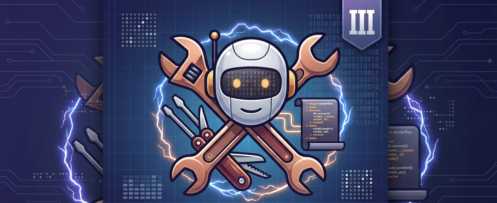
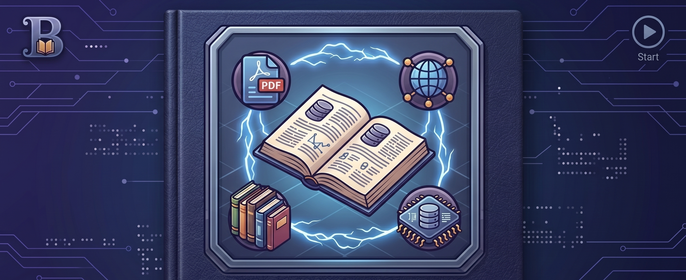

Bienvenidos a este recurso digital correspondiente a la unidad de aprendizaje Administración de Base de Datos que se imparte en la Licenciatura en Ciencias de la Informática de la UPIICSA. El propósito es fomentar la habilidad en la gestión, seguridad y optimización de la información.
Es muy importante generar un ambiente de respeto y confianza. Para dar inicio, te solicito que realices la actividad diagnóstica; posteriormente, revisa la metodología y continúa con el contenido de las unidades y prácticas en el Sistema Gestor.
Contenido Digital
📊 Actividad Diagnóstica
🎯 El objetivo de esta actividad es identificar los conocimientos previos de la unidad de aprendizaje, las necesidades, debilidades y fortalezas de los alumnos, para mejorar el aprendizaje.
✍️ Te pido de favor que al momento de contestar sea de forma sincera y con respeto, ya que será considerada para adecuar la planificación del docente. Te recuerdo que esta actividad no será considerada como parte de tu evaluación.
📥 Te solicito que des clic en el siguiente botón para descargar la actividad diagnóstica. Es necesario terminar la actividad para que posteriormente el docente pueda revisar la información.
📚 Metodología
Aprendizaje basado en casos prácticos y diseño de arquitecturas.
💡 Te conviene saber
Herramientas como ROLLUP y CUBE te darán una ventaja competitiva.
🛠️ Herramienta de apoyo
Descarga un cliente SQL como DBeaver o DataGrip.
📝 Actividades de aprendizaje
Prácticas por unidad: Tablespaces, Roles y Respaldos.
Unidades Temáticas
Explora cada unidad para dominar las bases de datos relacionales
📊 Unidad Temática I
Operaciones básicas de los SMBDR
⚙️ Unidad Temática II
Instrucciones de Administración de Bases de Datos Relacionales

🛠️ Unidad Temática III
Herramientas y asistentes de un Sistema Manejador de Bases de Datos Relacionales (SMBDR)

Rúbrica
Rúbrica de evaluación
Cierre
Resumen y conclusiones
� Bibliografía
Bibliografía y Recursos Adicionales
Glosario
Glosario de términos
🎓 Créditos
🏛️ Instituto Politécnico Nacional
Unidad Profesional Interdisciplinaria de Ingeniería y Ciencias Sociales y Administrativas (UPIICSA)
🏛️ Subdirección Academica
Unidad de Tecnología Educativa y Campus Virtual
✍️ Autores
M. en E. Ruth Blas Vázquez
Información del docente próximamentA EDITAR
⚙️ Producción
📁 Jefatura UTEyCV
Ing. A EDITAR
📐 Diseño instruccional
In. A EDITAR
💻 Programación web
Alexis Uriel Cadena Pérez (Servicio Social)